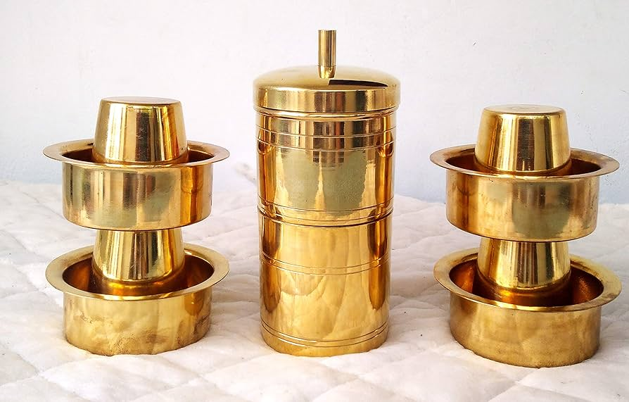

How is Filter Kaapi made?
Filter Kaapi requires an unique filter that first creates what is known as decoction, which is then added to milk.
Ingredients:
for decoction:
- 1½ cup water
- 3 tbsp coffee powder
for coffee:
- 1½ cup milk
- 4 tsp sugar
Instructions:
- firstly, take a coffee filter of 5-6 serves. it consists of 2 cylindrical vessels (bottom one for collecting brewed coffee decoction and the top one with perforated holes for adding ground coffee powder), pressing disk and a lid.
- add in 3 tbsp of filter coffee powder / ground coffee into the perforated vessel. add more coffee powder, for strong coffee.
- press tightly with the help of pressing disk.
- boil 1½ cup of water and pour slowly into the top vessel covering almost full.
- cover with the lid and rest for 30 minutes without disturbing.
- after 30 minutes, the decoction would have collected at the bottom of the vessel.
- pour ¼ of the glass with the decoction. adjust the quantity of decoction based on strong you prefer.
- add in 1 tsp of sugar or adjust to your sweetness.
- also pour hot boiling milk, separating cream. adjust the quantity of milk-based on strong you prefer.
- mix to dissolve sugar with the help of davarah or dabarah for an authentic feel. you can also use another glass.
- mix 2 times to get frothy filter coffee. do not over mix as the coffee cools.
- finally, serve south indian filter coffee immediately in the traditional tumbler and dabarah / davarah.